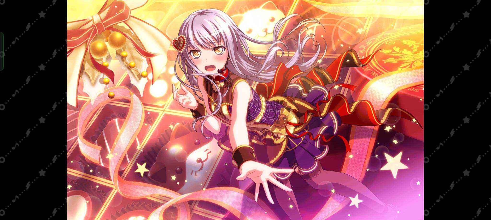

Co tak wspaniałego ma do zaoferowania Yukina żeby pozostać liderką najwspanialszej roseli? Ważnym aspektem który pozwala zachować jej tą zaszczytną pozycję jest bez wątpienia to że to ona założyła ten znakomity zespół, ale bardzo ważne jest też jak zdeterminowana jest w dążeniu do spełnienia celu. Jak potrafi zainspirować innych do działania, jej pasja do muzyki którą kocha od dzieciństwa i w końcu to jak wiele z czasem zaczyna znaczyć dla niej roselia. To wszystko pozwala zostać Yukinie najlepszą wokalistką i liderką świata i okolic Zainstaluj grę!
